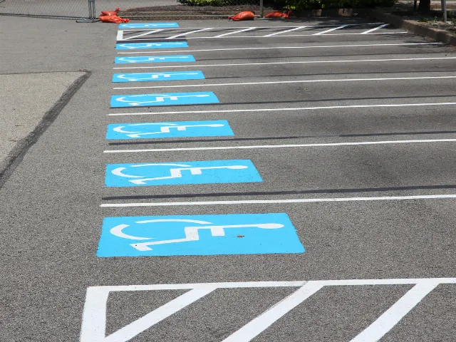

Parkeren in Nijmegen, met een aantal slimme tips
Gepubliceerd op 29 september 2022, bijgewerkt op 20 februari 2024
Onderdeel van de gids Winkelen in Nijmegen

Een goede en goedkope parkeerplek vinden kan erg lastig zijn. Vaak moet je te veel betalen voor de plek of zijn alle plekken al bezet. Echter is parkeren in Nijmegen eenvoudig, want de stad is voorzien van veel plekken om te kunnen parkeren. Voor ieder deel van de stad gelden eigen tarieven. Alle informatie over parkeren vind je hier.
Centrum van Nijmegen
In het centrum van Nijmegen geldt op straat betaald parkeren. De parkeerduur is onbeperkt, het tarief redelijk. Voor betaald parkeren zijn er verschillende zones en betaaltijden. Parkeren wordt duurder als u dichter bij het centrum bij het centrum parkeert. Bijvoorbeeld wanneer u gaat winkelen in Nijmegen. U betaalt de tijd die u parkeert. Omdat de capaciteit op straat beperkt is, raden wij u aan om in parkeergarages te parkeren. Bijvoorbeeld de parkeergarage Mariënburg. GPK-houders parkeren gratis op de speciale parkeerplaatsen voor gehandicapten en alle betaalde parkeerplaatsen. Dit geldt niet in parkeergarages en op parkeerterreinen met slagboom.

Gratis parkeren in Nijmegen
Om te begrijpen op welke plekken in Nijmegen u gratis kan parkeren, is het goed om te weten dat in Nijmegen parkeerzones staan. De stad heeft drie verschillende zones: de rode zone (vanaf €3 per dag), de blauwe zone (vanaf €2,40 per dag) en de groene zone (vanaf 1,80). Ga je buiten de parkeerzones, hoef je niks te betalen.
Parkeren in en rondom station Nijmegen
Nijmegen beschikt over 5 treinstations. Dat zijn:
- Nijmegen (Centraal Station)
- Nijmegen Dukenburg
- Nijmegen Heyendaal
- Nijmegen Lent
- Nijmegen Goffert
Q-park P+R transferium NS-station Nijmegen ligt aan de achterkant van het NS-station. Je kunt hier goedkoop je auto parkeren. Een plaatsje is vrijwel altijd te vinden. Reizigers met ov-chipkaart of met een NS-Abonnement krijgen korting op het dagparkeertarief.
Parkeerkosten Nijmegen
Er zijn in Nijmegen veel parkeermogelijkheden en hebben allemaal redelijk een redelijk laag tarief. Zoals eerder gelezen te hebben, heeft Nijmegen drie zones. Die hebben allemaal andere prijzen. De rode zone (vanaf €3 per dag), de blauwe zone (vanaf €2,40 per dag) en de groene zone (vanaf 1,80). Ga je buiten de parkeerzones, hoef je niks te betalen.
Als gehandicapte parkeren in Nijmegen
Wanneer je in het bezit bent van een gehandicaptenparkeerkaart, hoef je geen parkeerkaartje te halen bij de meeste parkeerautomaten in Nijmegen. Vergeet niet je gehandicaptenparkeerkaart zichtbaar achter de voorruit te leggen. Overigens is het wel goed om te weten dat je in een parkeergarage of op parkeerterreinen achter een slagboom je wel geld moet betalen. De techniek is nog niet toereikend om je kaart te herkennen.

Onze tips wanneer je wilt gaan parkeren in en om Nijmegen
- Via deze site kan je precies zien hoeveel plekken er nog vrij zijn in een bepaalde parkeergarage in Nijmegen. Super handig.
- Vanaf 18:00 geldt dat je in Nijmegen maar €0,50 cent per uur betaald in de parkeergarages.
- Je kan goedkoper parkeren bij een Transferium.
- Pak de bus of maak gebruik van een leenfiets